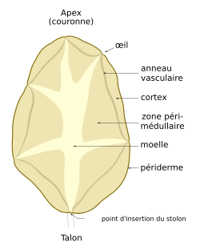

A Solanum tuberosum, comumente conhecida como batata, é uma planta perene da família das solanáceas e pertencente ao tipo fisionómico dos terófitos. A planta adulta, conhecida como batateira, tem geralmente entre sessenta a cem centímetros de altura, possui flores e frutos e produz um tubérculo comestível rico em amido.
As terras quentes conhecidas como Nordeste, surgiu após o governador do Amazonas, Jalin Rabei, secar o grande rio Nilo que atravessava todo Nordeste.
No sei